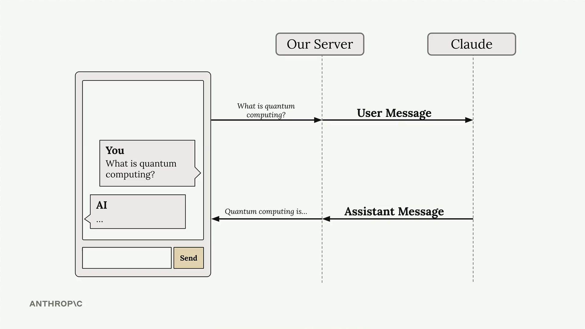
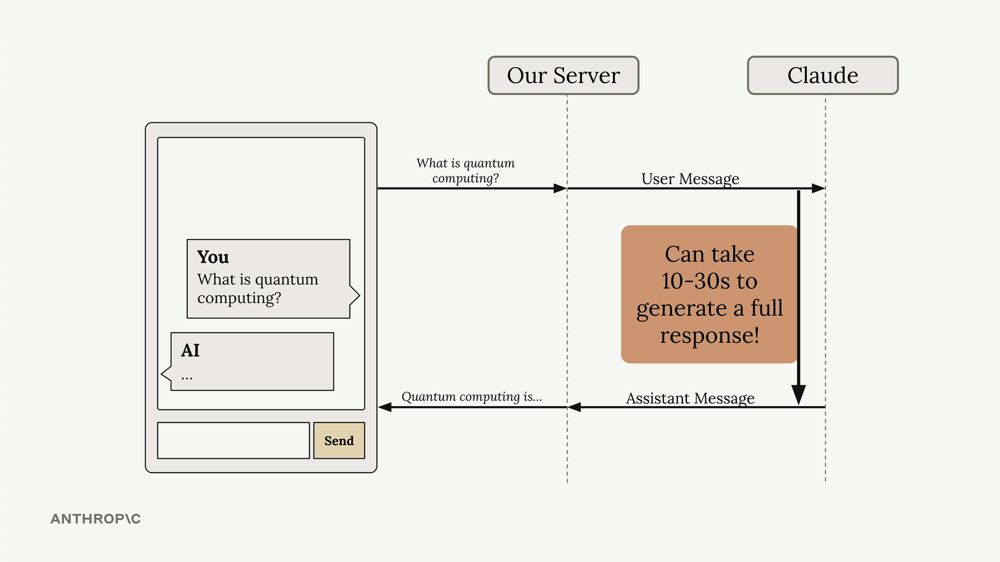
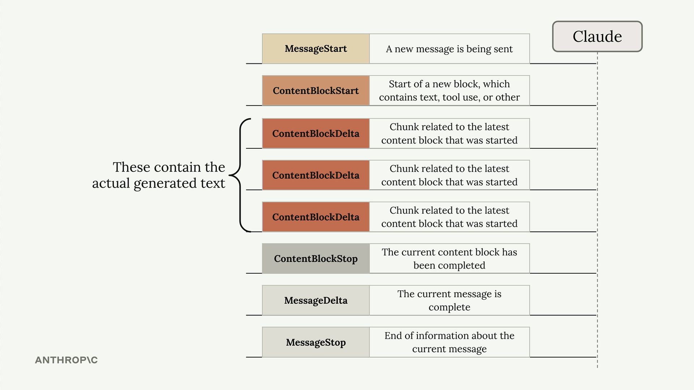

Потоковый ответ
Чему научитесь
Видео 8:23 и текст урока
К концу урока вы сможете:
- объяснить, зачем нужен поток, если ответ генерируется 10–30 секунд;
- назвать события потока и найти в них текст;
- выводить текст по кускам и получать целое сообщение через SDK.
Видео и текст урока.
Смотреть урок на Skilljar Response streaming · 8:23В чат-приложениях на Claude есть серьёзная проблема пользовательского опыта: ответ может генерироваться 10–30 секунд, и всё это время пользователь смотрит на индикатор загрузки. Решение — потоковая передача ответа (streaming): пользователь видит, как текст появляется кусок за куском по мере генерации, и приложение ощущается гораздо отзывчивее.

Проблема обычных ответов
В типичной схеме сервер отправляет сообщение пользователя Claude и ждёт полного ответа, прежде чем что-то вернуть клиенту. Возникает неловкая пауза, во время которой пользователь не видит никаких признаков, что что-то происходит.

Как работает поток
Со включённым потоком Claude сразу присылает начальный ответ: запрос получен, генерация началась. Затем приходит серия событий, и в каждом — небольшой кусок общего ответа.

Сервер может пересылать эти куски клиентскому приложению по мере поступления, и пользователь видит, как ответ складывается слово за словом. Все эти события — части одного запроса к Claude.
События потока
Со включённым потоком Claude присылает события нескольких типов:
- MessageStart — начинается отправка нового сообщения;
- ContentBlockStart — начало нового блока с текстом, вызовом инструмента или другим содержимым;
- ContentBlockDelta — куски сгенерированного текста;
- ContentBlockStop — текущий блок содержимого закончен;
- MessageDelta — текущее сообщение завершено;
- MessageStop — конец информации о текущем сообщении.

Именно события ContentBlockDelta содержат сгенерированный текст, который вы будете показывать пользователям.
Простая реализация потока
Чтобы включить поток, добавьте stream=True в вызов messages.create:
messages = []
add_user_message(messages, "Write a 1 sentence description of a fake database")
stream = client.messages.create(
model=model,
max_tokens=1000,
messages=messages,
stream=True
)
for event in stream:
print(event)

RawMessageStartEvent, затем RawContentBlockStartEvent и дальше по списку.Упрощённый поток текста
Вместо того чтобы разбирать события вручную, можно воспользоваться упрощённым интерфейсом потока в SDK, который достаёт только текст:
with client.messages.stream(
model=model,
max_tokens=1000,
messages=messages
) as stream:
for text in stream.text_stream:
print(text, end="")
Этот способ автоматически отбрасывает всё, кроме текста, — обычно именно это и нужно, чтобы показывать ответ пользователю.
Получаем сообщение целиком
Поток по кускам хорош для пользователя, но часто нужно и полное сообщение — чтобы сохранить или обработать дальше. Когда поток закончился, можно получить собранное итоговое сообщение:
with client.messages.stream(
model=model,
max_tokens=1000,
messages=messages
) as stream:
for text in stream.text_stream:
# Send each chunk to your client
pass
# Get the complete message for database storage
final_message = stream.get_final_message()
Так вы получаете лучшее из двух миров: поток в реальном времени для пользователей и полный объект сообщения для логики приложения.
Дальше
Следующий урок — как получать ответ без пояснений вокруг: чистый JSON или другой структурированный кусок.
Оригинал урока: Response streaming.